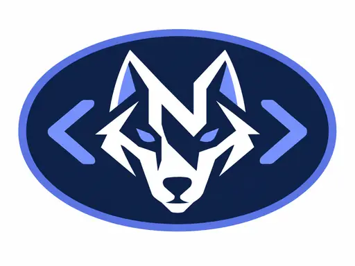

.nqr everywhere
Source files use `.nqr`, projects use `project.nqr`, locks use `noqeri.lock`, and the CLI is `noqeri`.
 noqeri
noqeri
A statically typed, native-oriented language with a clear compiler pipeline, reference interpreter, Linux x86-64 native backend, project tooling and editor integration.
function add(a: int, b: int): int {
return a + b
}
print("Hello from noqeri")
print(add(10, 20))The `.nqr` extension, compiler, project format, site, docs and editor integrations all use the noqeri name and the same wolf/code visual identity.
Source files use `.nqr`, projects use `project.nqr`, locks use `noqeri.lock`, and the CLI is `noqeri`.
Lexer, parser, static checking, NIR, optimizer, interpreter, native backend and LSP have explicit ownership.
The compact wolf/code mark is wired into VS Code file icons, with TextMate, Vim/Neovim and Sublime language support.
The C++17 frontend and tools are CI-tested on Linux, Windows and macOS, with native Linux x86-64 emission today.